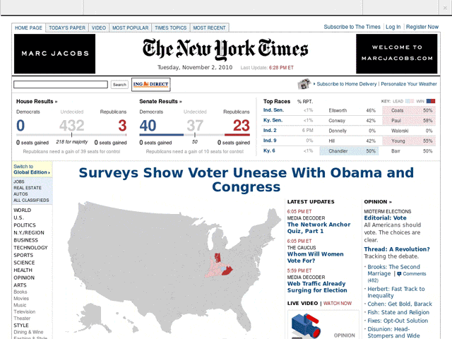

HOWTO: Make a screenshot timelapse video.
July 21, 2011
After I posted that nytimes-lapse video earlier this week a lot of people wrote in asking me about how it was accomplished.
The accident
No one just "ends up" with with 13,802 screenshots. I fully planned to make something not entirely unlike that video – but it was supposed to last two weeks, not nine months.About a year ago I was doing my best trying to not fail at finishing my undergraduate thesis. I was also being constantly harassed by my advisor to create a demo that would justify all the office space I was occupying.
The problem is that I had what was an essentially undemoable project. It took weeks of user interaction for meaningful results and its very premise hinged on being kind of invisible.
So, I decided that I could try to make a point by illustrating just how much stuff there is on the internet and to this end I set up a cron job and… promptly forgot about it. It went on until I received an email from my hosting company telling me that my server had exhausted all of its disk space.
What does this cron job look like?
*/30 * * * * /home/phillmv/screenshots/do_it.sh
#!/bin/bash /usr/local/bin/wkhtmltoimage --crop-h 768 http://nytimes.com /home/phillmv/screenshots/nytimes-`date +%Y%m%d-%H%M`.jpg
wkhtmltopdf is a phenomenal utility.
How long did it take you to make?
It took about two or three evenings and most of a weekend to put together, which I colloquially refer to as “about four days”. The vast majority of the time was spent downloading, uploading, carefully editing out the full page ads, rendering, reordering files, and slowing down the interesting bits.
Okay, I have a folder full of jpegs. What now?
Install ffmpeg. It’s a tool for manipulating video and audio data. Make sure you enable x264 and liblame support. Ubuntu users feeling frisky should check this guide out, tho compiling it from source is probably unnecessary. OSX users can install it through homebrew.
Go into your screenshot folder, rename every file so that its filename is a number that increases sequentially starting from 0, and type the following in:
ffmpeg -r 30 -i %d.jpg -vcodec libx264 -bf 0 -crf 12 -threads 2 -an -r 30 filenamehere.mp4
If you want to add an mp3 to it, after the above command completes, type in:
ffmpeg -i filenamehere.mp4 -i song.mp3 -map 0:0 -map 1:0 -r 30 -acodec copy -vcodec copy -threads 2 filenamehere_with_sound.mkv
Say what?
Don’t get me started. ffmpeg is a crazy complex tool. It was written by a guy who is just frighteningly smart. It’s hard to use, and most of the flags are configuration options for the codec being used.
No one really knows how to use it. I’ve spent a lot of time getting it to work. People trade magic incantations for it over forum posts. If you care about quality, you should be using a preset.
The key things to know:
-i defines an input file.
%d.jpg is a pattern matcher for digits.
The first -r defines input frame rate, the second -r defines an output framerate.
The defaults work well enough (for screenshots). It’s hard for me to spend any more time thinking about this.
I'm going to take your word on that
You should. They’re excellent words. Prime verbiage right here.
Wait, how the hell am I supposed to rename 12,000 files?
I wrote a script. It’s easy, when you’re a programmer.
So... how did you edit this?
Like I said, I wrote a script. It made looking up specific images and repeating certain frame sections easy. It was okay. It was tolerable.
I timed the number of frames to match up with the length of the song.
Should I use Youtube or Vimeo?
My heart says Vimeo, but they reject weirdly sized videos like mine. Youtube accepts a wide variety of formats, but I kept having issues where the first 5 seconds were corrupted and full of grey frames.
I eventually discovered that youtube has a problem with the mpeg4 container and that storing it in Matroska instead made all my pain go away. Read the following [excellent guide to video encoding by Mark Pilgrim](http://diveintomark.org/archives/2008/12/1 8/give-part-1-container-formats) if you don’t intuitively grasp the meaning of the previous sentence.
Unfortunately, it seems like I haven’t ironed out the kinks. Caveat emptor.
That was a really cool video!
Thanks! I’m conflicted over how I should feel about this. On the one hand all of the attention was exhilarating and intoxicating, yet on the other I could feel the raging rampant narcissism I engaged in slowly poisoning my soul.